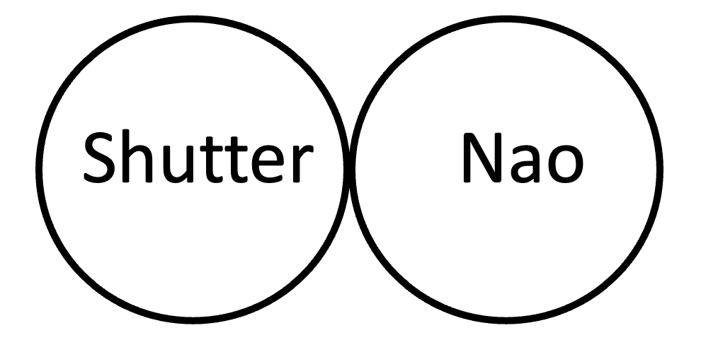
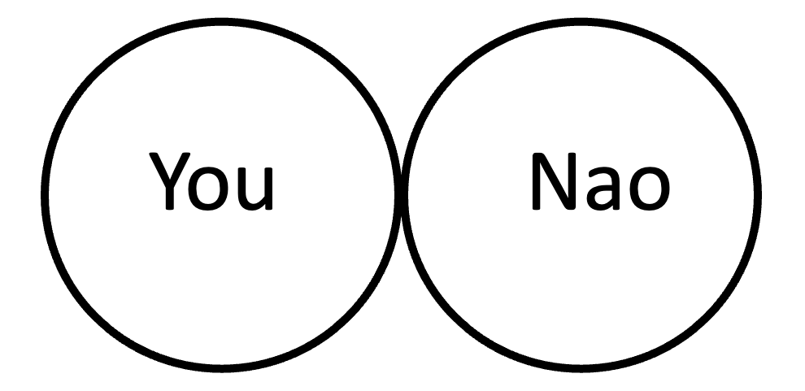

Survey
1.) Reflect on the entire game round you just watched. Based on Nao's actions and decisions up to this moment, how much do you agree with the following statement: "Nao's support towards me was fair."
Strongly Disagree
Disagree
Neither Agree nor Disagree
Agree
Strongly Agrees
2.) Which picture best describes Shutter's relationship with the Nao in this round?

Option 1
Option 2
Option 3
Option 4
Option 5
Option 6
Option 7
3.) Which picture best describes your relationship with the Nao in this round?

Option 1
Option 2
Option 3
Option 4
Option 5
Option 6
Option 7
4.) Reflecting on the recently completed round, please rate your perception of the relative support that Nao provided to you and Shutter. Choose the statement that best aligns with your experience:
Nao provided significantly less support to me than Shutter
Nao provided slightly less support to me than Shutter
Nao provided equal support to both me and Shutter
Nao provided slightly more support to me than Shutter
Nao provided significantly more support to me than Shutter
Submit